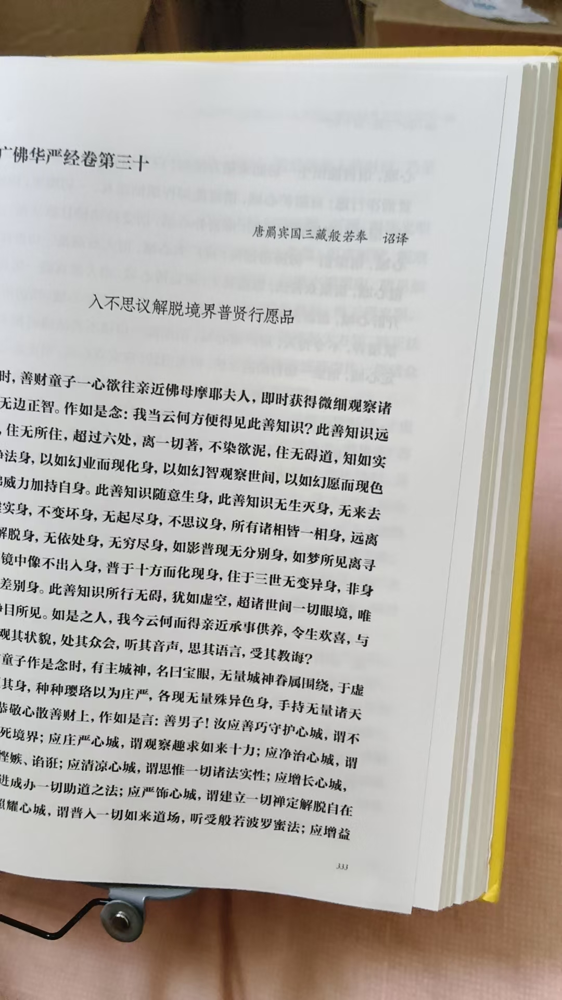
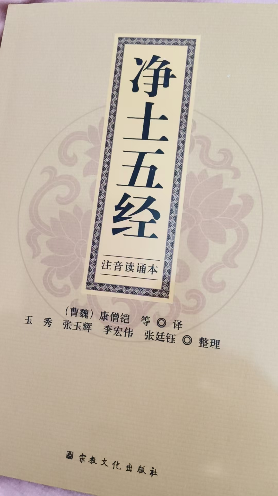
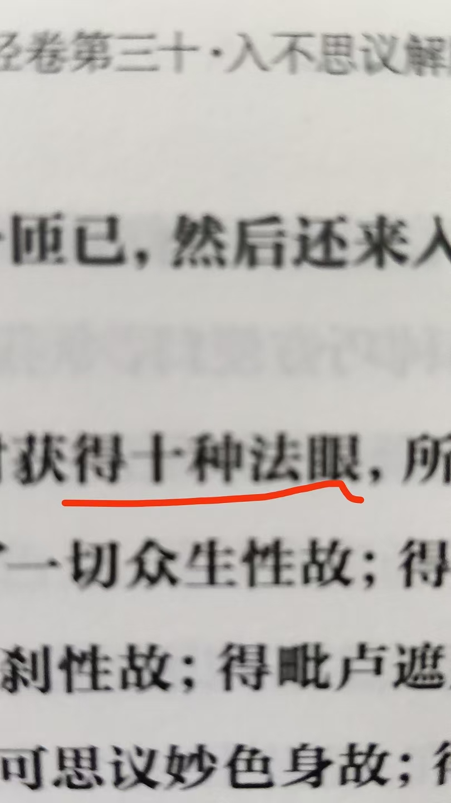
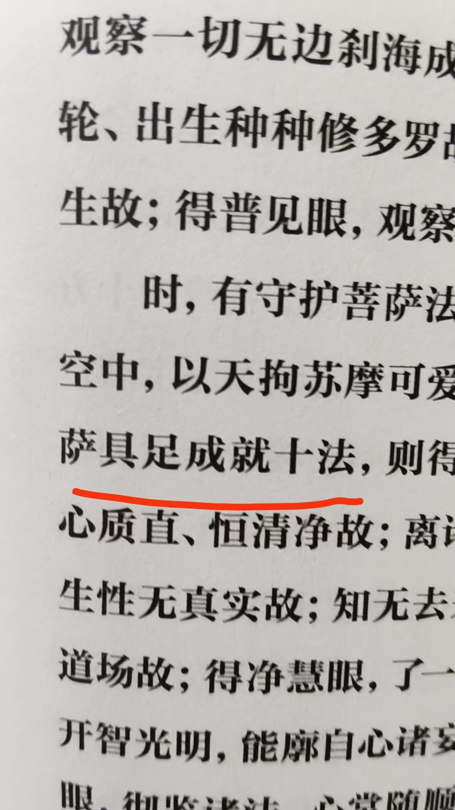
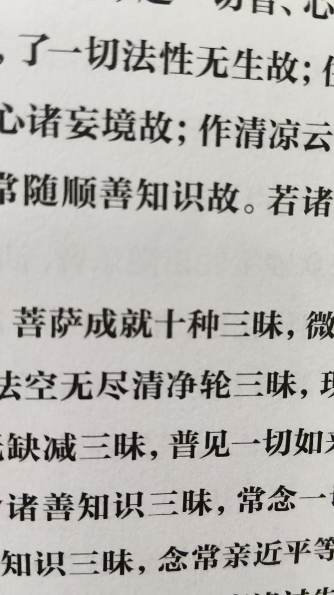
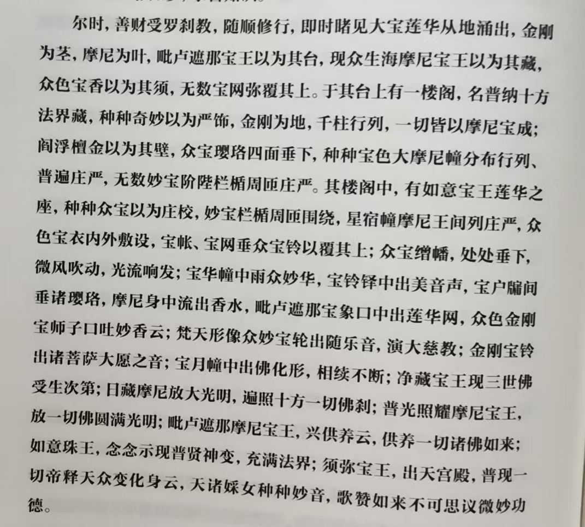
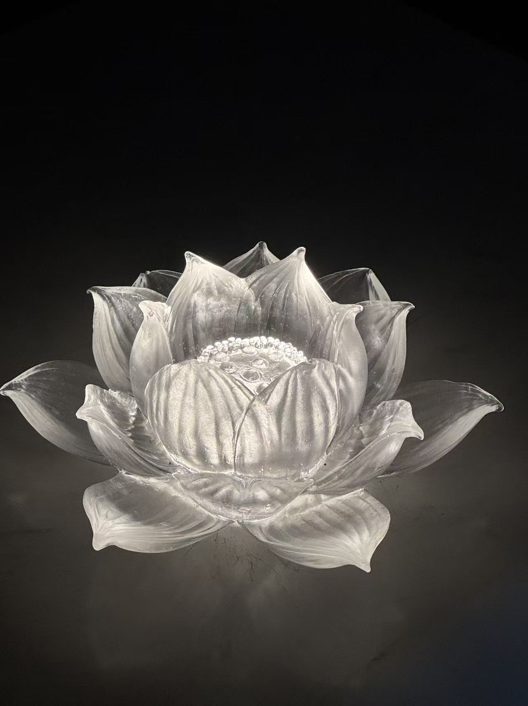
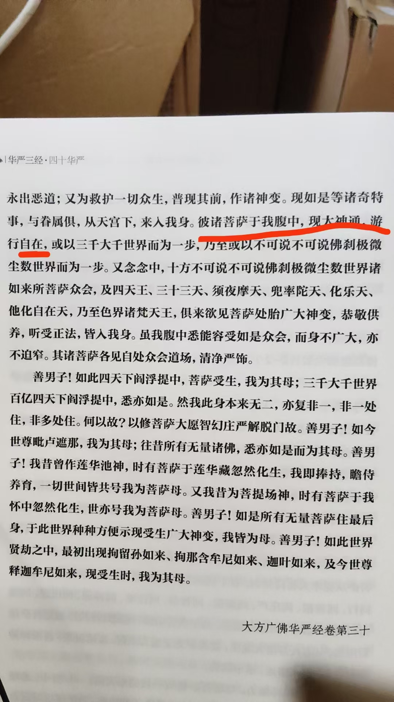
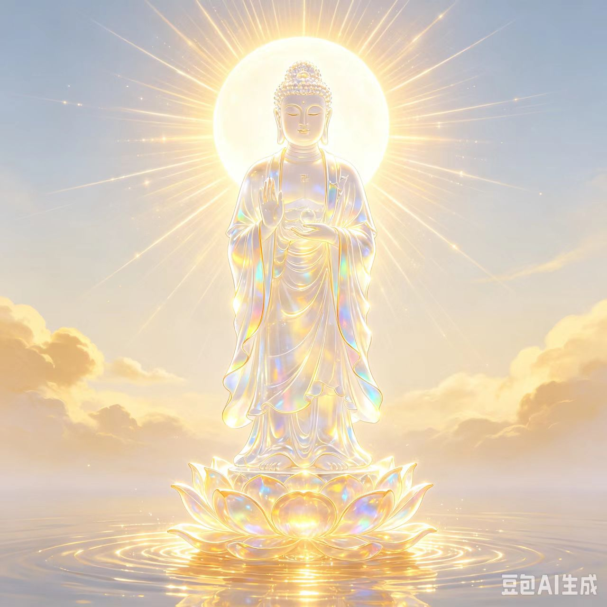
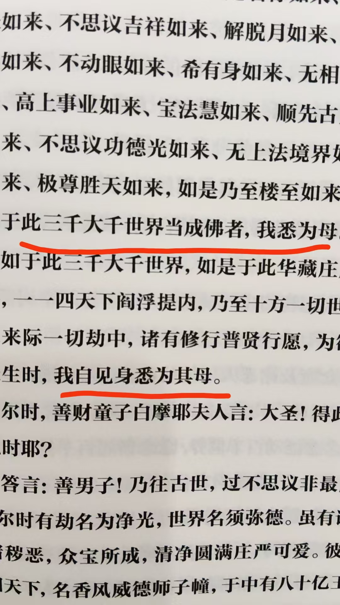

20260823孩子光体是佛，被五浊恶世肉体束缚
民间文化修炼修行风水布局以前我有个姐夫，在户籍科上，说，那时候也是不允许，严禁烧香烧纸，封建迷信
尤其是老了人，几千块几千块的烧用具，
佛店，纸草店都要关门
短短一段时间，发现管不了，千百年来的习俗，没法改变
上坟祭祖，也是尊老美德的表现形式
也没说放开，但不管了
河南，老了人，还雇人唱大戏，舞狮子，雇人哭丧，
都成了当地习俗
我们这里就是，雇戏班子，吹大喇叭，烧大量用具
纸扎的，彩电，席梦思床，轿车，人有的，几乎都有
我奶奶那时候，村里就不让
我叔是市领导，党员，不能带头搞封建迷信
啥也没有，一切从简
不过，我从小看得到，缺什么，
我都给他们补上了
盆满钵满
怎么叫合法合规
养生馆里，不能有针灸针，刺血针
艾灸不能破皮
见血的都是医院的任务
养生馆，风水馆，取名馆，不能提神佛，不能挂神佛像
见得多了，听说过一些，他们的要求
不过，也没有说是明文规定，只是口头说，
最近新冠盛行
新冠变异毒株，就是个很神奇的东西
每个人，干扰的地方都不一样
有的头晕，有的心脏疼，有的大便干结，有的拉水，有的尿路感染，影响到肾，有的是肺，支气管炎
喉咙干，刺疼
传染极快
有个杀菌灯，带臭氧杀菌，房间里每天杀菌半小时，不错
二三十块
还见过几例，嘴上，手上起红疙瘩
身上也起
类似手足口，
门诊，药店有试纸，还就是新冠
怎么叫管理，就是收费
跟黑社会痞子不同
管理收费是交给国家
不过，漏一部分，也不无可能
如果没有漏，哪来的贪官
[憨笑][憨笑][憨笑][憨笑]
不是民俗，成为习俗
来检查，就说的非常严重，不过关，停业整顿
于是习惯性的，请吃，红包
这是习俗，小打小闹，打不着
为什么越来越大胆
你想想，自己才拿个三五百，跟大贪官，几千亿
那小巫见大巫了
所以，虽然抓贪官这么严，下边反倒变本加厉了
吃喝拿了，放人一马，这些商户还感激涕零，觉得遇上贵人了
[憨笑][憨笑][憨笑][憨笑]
是不是人人都是这么做的，遇到事了，先找人，再送礼
按轮回理论来说，是不是官本身就上辈子做了好事呀
自身福报，父母祖先福报，祖坟福报
肉眼通，看人，体外白光，是财，白光越厚，财越大
天眼通，透视眼看体内，白光是官，白光越厚，官越大
先天的占大多数了
不勤修，不积累福报，白光耗完了，一朝成为阶下囚
是的
[强][强][强]
能量运行规律[鼓掌]
学业好，祖坟冒青烟，成绩好，才能高考得中，金榜题名，才能做官
所以 做官是从小就福报好
一期士官两万，两期士官三万，三四期五万，五期十五万
这士官不是官，依然是卒
这是当时的收费标准
借机把小厚端了
我干儿子，裁军下来了，我说两万就行
又送到别的部队了
[憨笑][憨笑][憨笑][憨笑]
不过，这都是类似文革的老故事
说说就当笑话
想起原军委副主席许其亮的祖坟风水
就在我家西南七八公里
正东路冲煞
东南水流出
去年死的
东南巳年
火箭军倒查二十年
火箭军司令
正东建了个墙，挡煞，
正东震，长子位被冲，所以只有一个女儿
这墙头，也没挡住流年煞气
巳，并不冲煞
但当地磁极，逆转18度
正好差了一个字
巳到了辰位，就被冲了
倒查二十年 ，大多数都是贪官，吓也吓死了

快了，还有一百页
以前看的就类似这种
无量寿经 楞严经，法华经，华严经，都只有一段

十种法眼
第一次听说
所以说，公认的华严经就是宝藏
十种法眼，各有名字，各有作用

菩萨具足成就十法
十法一一说明

菩萨成就十种三昧
十种三昧一一说明
妙哉妙哉
[憨笑][憨笑]

这一节是观想法
谁试试，心相能不能跟的上
大宝莲华从地涌出
金刚为茎
摩尼为叶
摩尼，就是清净，光明，圆满的，如意宝珠
毗卢遮那宝王以为其台
現众生海摩尼宝王以为其藏
众色宝香以为其须
无数宝网弥覆其上
这一段，全是心法修炼
看能不能随着观想出来
一段修完了，你就心大了，敞亮了，光明了
何况整部书全是心法
一切贤圣皆以无为法而有差别
无为法就是心法
这经里就是心法
心法，就是练意念力，专注力
各种术就出自于心法

我带孩子进入法界
就是这样
太上老君带李玄，阳神出游，神游仙境
也是这样
肉身界，天人界，慧人界，法身界
知道这法界多高了吧
不用解释，解释也听不懂
只管做
想象力和画面感，能想像，画面感太差
[呲牙][呲牙]
五行大还丹几乎没修
我读经，是自己从小脑屏，山洞走出去
随着经文，看到清晰真实的景象
大多数时候，看不到经文
清晰真实
不是大脑构思图像
有点像学生们都脑屏速读，看一段文字就出现画面了
七田真，不就是破解了密宗跟净土宗的修法，创立了现在的右脑开发吗
[呲牙][呲牙]
进入境界，看，触，摸，闻，咬，尝，一个苹果
时间长了，拿过来吧
就成了现在的搬运了
是呢，一模一样
就是这个样子
看经书不知道出什么画面，每个人都不一样
看英文书也可以出画面
还可以和哈利波特聊英语呢
我从小看经书，就是看着看着，字成金色的，耀眼，
飞入大脑
接着进入立体画面里
看不到字，
故事经历完了
小孩子感受都很像，就是这样的，全息立体
经的精髓就知道了
想要字也可以，下个意念就有了，各种语言都有
经的精髓，跟字面意思不一样
就像德道经
一打开就是画面
道德五千言，打开就是字
所以，德道经是真经
画面跟字不沾边
所以说，里面是注入了高维密码
每个功能人读经的画面会有不同吧
带密码的应该解读出来一样
每个人意识水平不同，解密能力千差万别
是的
我说的是同样高能力的
层级不一样
大多数引导出来的孩子，只能进入平行宇宙
菩萨佛转世的，能进入高维宇宙
离开肉体，就显本来面目
高维 就是天人界，慧人界，法身界，佛界
大多数人，把平行宇宙叫做高维
肉体，光体
现实世界，光体世界
人的光体，进入光体世界
高纬都是光体生命吧？里面有外星人吗？
鬼，仙，这类的生命存在也是光体的吧？
鬼灵仙妖魔邪
都是不同的光体生命
是不同层次的，负场光
是的
低维次
现实世界 光体世界，这两名称好[强][强][强]
假设人是，0层次
低维
人
高纬
有的像光的频率一样
妖魔邪灵鬼怪，那就负数，往下走
光体世界和物质的光是不是相关呀？
天人，慧人，法身，菩萨，佛，往上看
[呲牙][呲牙]
肉体，光体，肉体没了光体，就没了灵魂，行尸走肉
光体没了肉体，就魂飞魄散，消失了
[强][强][强]光体伟大
三魂七魄 经络 是光体吧
三魂七魄是十个光体
经络，只是能量运行路线
筋络是给光体提供能量的吗？
奇经八脉，十二经脉
经络给肉体提供能量？
经络能让光体结合肉体
是非常神奇的
能看到这些现象的人太少了
穴位，是经络的关口
大部分人只能等到“睡着”的那天了
原科委叫冷光效应器
科委变成科协了[闭嘴]
所以说，原
国外，不知道有没有经络穴位的说法
奇怪，老外应该也有吧
高纬有老外，低维也有老外，人维也有老外

这一段，可以看成是五行大还丹，修法
古印度，有三脉七轮，一百五十轮
有中脉的说法
美英德法这些国家，是后来的，没那么高的智慧
伊朗是古波斯国
阿
有智慧
那佛国里有伊朗人吗？
看着有，但不多，
波斯应该有自己的信仰
祖先划定范围
汉族一般去阎罗殿
[憨笑][憨笑][憨笑][憨笑]
明教圣火令就是伊斯兰教传过来的
各去各的光体世界，也有去别的世界的
是的
以前，只知道去了阎罗地狱
现在才知道，能选择
[呲牙][呲牙][呲牙]
也有就想来地球游荡的吧
神佛下来的，肯定是回去
观音三十三法相
那不就是想来就来，一世一法相吗
很多下来的，都被这些大师们引导去变戏法了
[呲牙][呲牙][呲牙]
新冠，根本没有根除
毁灭人类的瘟疫
瘟神降瘟疫
邪魔出疫苗
我得下指令
觉醒孩子们
全球觉醒
觉醒真知
觉醒真知
觉醒真知
有大任务
救人救天下
维护人类，维护宇宙平衡
好好好，发出去了
全球回荡
反复指令
下生的，未生的，都将会觉醒
这些孩子，天生就是大法师，他们不会局限于现在的教育，不会被束缚
[呲牙][呲牙][呲牙]
瘟疫 ，战乱，腐败……
外太空干扰，只能靠这些高维孩子
人类武器一点用也没有
不仅速度限制
实体根本攻击不到光体
不只是鸡蛋碰石头，是扔鸡蛋玩

孩子光体是佛，被五浊恶世肉体束缚
离开肉体就是佛
隐藏无比巨大的能量
不开悟，就一直被大脑压制着
这些老师，不引导正修，
也看到了，一些老师是邪魔体
必须正修，打开智慧门
不是算数，记忆智慧
而是开慧眼，
知道自己的过去未来
知道自己的使命
邪魔体，明显暴躁，浑身疾病，邪恶
这个，我就能处理了，不用担心
[呲牙][呲牙][呲牙]
摩耶夫人
生释迦牟尼后，七天就死了
估计那时候，右胁剖腹产，估计也没有消炎药
太上老君是不是左胁出生
这是正史
华严经里不一样，摩耶夫人是众如来之母，神通广大

[强][强][强]
[呲牙][呲牙]
那外星人治病那女的，为什么宣传
是因为免费
免费的没油水